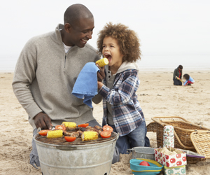
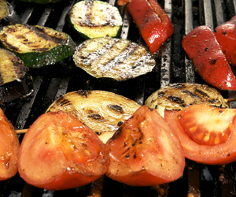

Keep Your BBQ Healthy: Add Veggies
In This Article: Asparagus and Peppers Corn Eggplant Onion
Go beyond beef and add some healthy vegetables to the grill. These are some of our favorites:
Asparagus and Peppers
Both of these can be cooked the same way. To prep the peppers, though, slice them and remove the seeds. Brush on a light layer of olive oil and season with salt and pepper to taste. Grill over high heat for 2 to 3 minutes.
Corn
The best way to cook corn on the cob is to keep it in the husk. Peel the husk down, remove the silk and cover the corn back up with the husk. Place the corn on high heat and cover. Cook until the husks are charred on all sides, about 15-20 minutes, turning occasionally. Remove and let sit for about five minutes. Serve with herb butter.
Eggplant
Cut eggplant into ½ to ¾ inch slices. Brush both sides with a mixture of minced garlic and olive oil, and place directly on the grill. Cook for about five minutes on both sides or until nicely browned.
Onion
Peel the onion and slice it into 6 half-inch slices. Place a pat of butter in between two slices of onion, wrap in aluminum foil, and place on the lowest rack on medium heat and cook about 30 minutes.
You can also try grilling tofu, mushrooms, fennel, and squash for a healthy, vegetable-packed cookout.
Related Categories